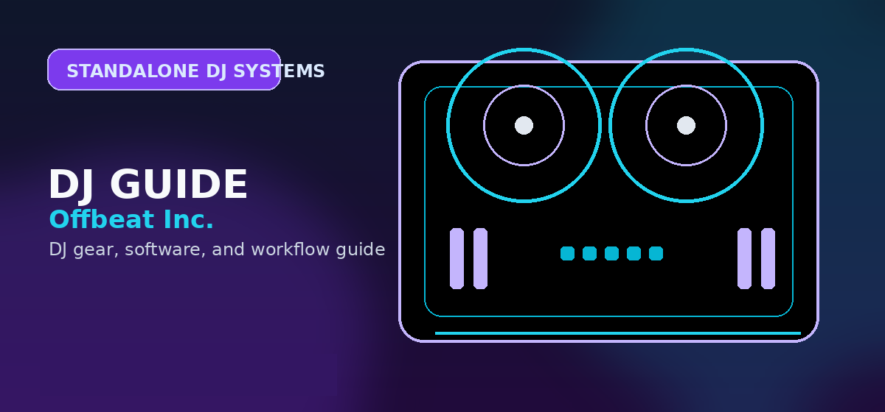

Denon Prime Go Review 2026
Full review of the Denon Prime Go standalone DJ controller — performance, battery life, streaming, and who it's for in 2026.

Disclosure: This page uses affiliate links. We may earn a commission at no extra cost to you. Full disclosure →
The original Denon DJ PRIME GO is a two-channel standalone Engine OS system with a 7-inch touchscreen and a manufacturer-rated battery life of up to four hours. This guide uses Denon’s product specifications and compatibility documentation, rather than claiming hands-on runtime measurements. Confirm whether a listing is for the original PRIME GO or the distinct PRIME GO+ before buying.
Verified features
- Rechargeable battery rated by Denon for up to four hours
- 7-inch touchscreen — real library browsing, not just a small secondary screen
- Two-channel mixer with dual-deck standalone playback
- Standalone operation — no laptop required once tracks are loaded
- WiFi streaming from SoundCloud, TIDAL, and Beatport Link
- One USB drive port and an SD card slot for prepared music libraries
- Two independently controlled microphone inputs
Buying limitations
- Check your library preparation and export workflow before a gig
- Check beat grids and cue points on your own tracks
- Compact jog wheels differ from full-size club players
- Denon lists PRIME GO as incompatible with Serato DJ Pro
- Plan screen visibility and weather protection for outdoor use
Quick Specs
| Spec | Denon Prime Go |
|---|---|
| Battery | Up to four hours (Denon rating; actual runtime varies) |
| Screen | 7-inch HD multi-touch display |
| Channels | Two-channel mixer |
| Jog Wheels | Two jog wheels; see the original PRIME GO manual |
| Connections | USB drive port, computer USB port, SD slot, Ethernet; XLR/RCA master, 1/4-inch booth; 19V DC adapter input |
| Streaming | SoundCloud Go+, TIDAL, Beatport Link (WiFi) |
| Weight | 3.68 kg (8.11 lb), without USB and power cable |
| Dimensions | 411 x 274 x 53 mm (W x D x H) |
Original PRIME GO: hardware and power checks
Standalone workflow
Denon specifies two-deck mixing, a two-channel mixer, a 7-inch HD touchscreen, dual microphone inputs, and USB/SD music playback. The original model weighs 3.68 kg without the USB and power cable. Check these original-model specifications rather than borrowing features from other PRIME systems.
Library and streaming preparation
Prepare and verify your music library, cue points, and beat grids before performing. The unit supports onboard library browsing and compatible streaming services, but service accounts, firmware requirements, network availability, and offline access differ. Keep a tested local music backup for gigs.
Battery and external power
Denon rates the original PRIME GO for up to four hours on its built-in battery. That is a manufacturer maximum, not an independently measured duration or a guaranteed four-hour performance buffer. Denon specifies a 19V DC, center-positive adapter input. Do not buy an ordinary USB-C power bank expecting a USB-C charging port on this model; verify any external power solution against the manual.
Who Should Buy the Denon Prime Go
The Prime Go makes sense for:
- Event DJs who play outdoor or pop-up venues — pool parties, rooftop events, garden parties where extension leads are impractical
- DJs who play small-medium venues and want to eliminate the laptop — standalone playback without a laptop
- Mobile DJs — check the 3.68 kg unit weight, case size, power plan, and speaker requirements
The Prime Go does NOT make sense for:
- Stadium-level or residency DJs where clubs have CDJs installed — bring a USB stick, don't bring your Prime Go
- Bedroom producers using a DAW-integrated workflow — the Prime Go's strength (standalone playback) doesn't benefit laptop-home setups
- DJs who require Serato DJ Pro — Denon’s compatibility table marks the original PRIME GO as not compatible
Denon Prime Go vs. Alternatives
| Device | Price check | Standalone? | Battery? | Best For |
|---|---|---|---|---|
| Denon Prime Go | Check current listing | ✅ | Up to 4h (rated) | Outdoor/cordless DJs |
| Pioneer DDJ-FLX10 | Check current listing | ❌ | ❌ | Serato/rekordbox club prep |
| Pioneer XDJ-RX3 | Check current listing | ✅ | ❌ | Club-standard standalone |
| Denon SC Live 2 | Check current listing | ✅ | ❌ | Serious standalone, large screen |
| Pioneer DDJ-400 | Check current listing | ❌ | ❌ | Laptop-dependent beginners |
Official product and support pages
Prime GO makes sense for mobile sets, ceremony systems, and compact backup rigs.
It is not a direct substitute for a full-size home or club controller.
Battery life, screen comfort, and library prep are the checks that matter before buying.
Use these official pages to confirm current specifications, software compatibility, and support details before buying.
Frequently Asked Questions
How long does the battery actually last?
Denon rates the original PRIME GO for up to four hours on its built-in battery. Actual runtime varies; this is not a hands-on measurement or a guaranteed gig duration. The original model uses a 19V DC adapter input, not a USB-C charging port.
Does the Denon Prime Go work with Serato DJ?
No. Denon’s Engine hardware compatibility table lists the original PRIME GO as not compatible with Serato DJ Pro. It lists VirtualDJ support with the required VirtualDJ license; check the table and firmware requirements before buying.
What streaming services does the Prime Go support?
Denon lists Beatport, Beatsource, SoundCloud Go+, TIDAL, and Dropbox access for the original PRIME GO. Check the current Engine DJ supported-services matrix and the provider’s required plan; prices, account requirements, and offline features vary.
Is Engine DJ software catching up to rekordbox?
Compare the workflows you need rather than relying on an unsupported ranking. Verify your own library import, beat grids, cue points, streaming access, and installed Engine OS version before a performance.
What should I check before buying this DJ controller?
Confirm software compatibility, audio outputs, headphone cueing, driver support, and whether the controller fits your real practice or gig setup.